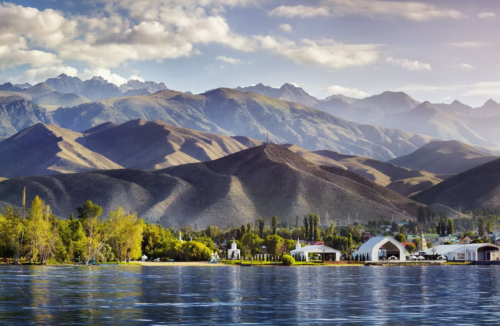
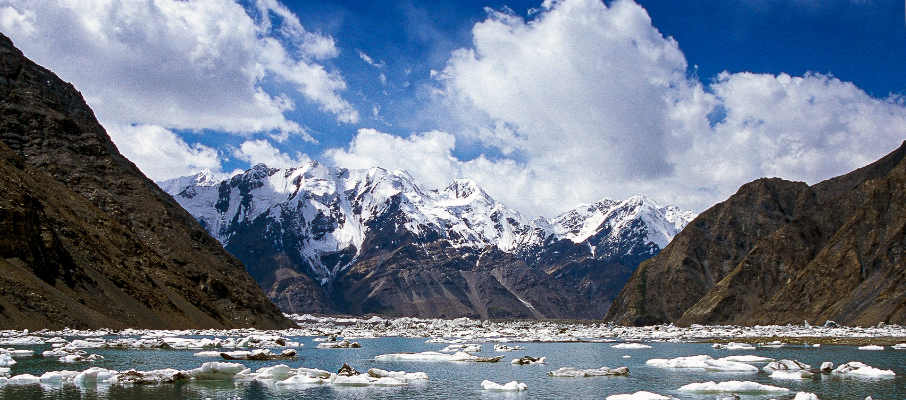
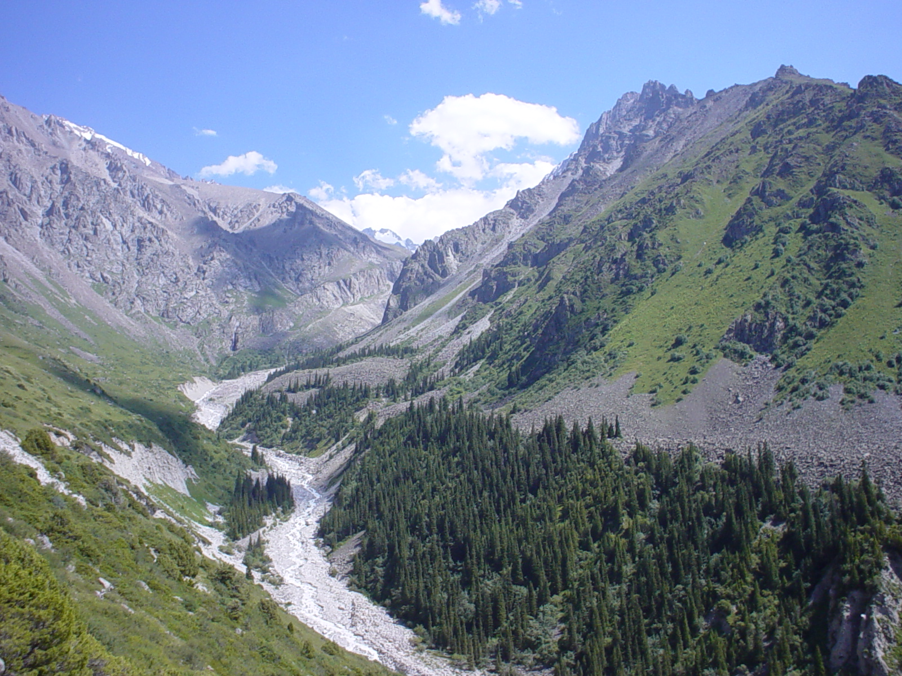

Bienvenue sur notre site
Air Kyrgyzstan vous offre des vols vers les plus belles destinations d'Asie Centrale et au-delà.
Découvrez notre flotte moderne, notre service client primé, et réservez vos billets facilement.
Notre mission est de relier le Kyrgyzstan au monde entier tout en garantissant confort et sécurité.
Nos plus belles destinations kyrgyzstannaises, qui n'attendent que vous :
Envie d’évasion ? Laissez-vous séduire par le lac Issyk-Kul, une merveille naturelle nichée entre les majestueuses chaînes de montagnes du Tian Shan.
Deuxième plus grand lac salé du monde, Issyk-Kul vous invite à vivre une expérience unique avec des plages scintillantes, des eaux magnifiquement claires et des panoramas à couper le souffle.
Baignades rafraîchissantes, balades en bateau, couchers de soleil romantiques… ici, chaque instant est une carte postale.
Que vous soyez amateur de plage, passionné de randonnée ou curieux de découvrir les merveilles du Kyrgyzstan, le lac Issyk-Kul vous offrira à coup sûr un séjour inoubliable.


Au cœur de l’Asie centrale, les montagnes Tian Shan dévoilent un paysage où se mêlent sommets enneigés, steppes de verdure et lacs d’un bleu profond.
Ces montagnes célestes sont votre porte pour vous reconnecter avec la nature de l’Asie.
Elles invitent à la découverte d’un monde sauvage, où chaque vallée révèle une nouvelle beauté, et chaque crête offre un panorama spectaculaire.
Parcourir les sentiers qui mènent aux innombrables lacs ou franchir le col de Jukku.
Ici vous pourrez partager le rythme de vie des nomades kyrgyzs, séjourner dans une yourte et savourer la simplicité d’une hospitalité ancestrale.
Gravir le pic Khan Tengri, c’est relever un défi vertigineux qui restera avec vous à jamais.
Les Tian Shan ne se contentent pas d’être admirés, ils se vivent pleinement.
Pour les amoureux d’aventure, de calme ou même amateurs de photographie, c’est sans aucun doute une expérience hors du commun.
À seulement une heure de la capitale kyrgyz, le parc national d’Ala Archa est un véritable refuge de la vie industrielle de la cité.
Dominé par des sommets imposants et des glaciers éternels, ce parc offre un décor spectaculaire où la montagne se dévoile dans toute sa grandeur.
Les sentiers d’Ala Archa serpentent à travers des forêts de conifères, des rivières tumultueuses et des vallées sauvages.
Chaque randonnée, qu’elle soit courte ou exigeante, mène à des panoramas saisissants, comme la célèbre gorge d’Ala Archa ou le refuge Ak-Sai, point de départ de nombreuses expéditions vers les sommets alentour.
Ce parc vous mettra aussi en contact avec la faune locale : marmottes, bouquetins et aigles peuplent ces montagnes préservées.
C’est un terrain de jeu privilégié pour les randonneurs, grimpeurs et amateurs de nature qui souhaitent s’évader sans quitter la région.
Ala Archa est plus qu’un parc, c’est un nouveau monde qui vous ouvre ses portes, alors prenez votre sac de randonnée et votre appareil photo car ce parc naturel sera une escapade incontournable pour tous ceux qui veulent découvrir le Kyrgyzstan.
